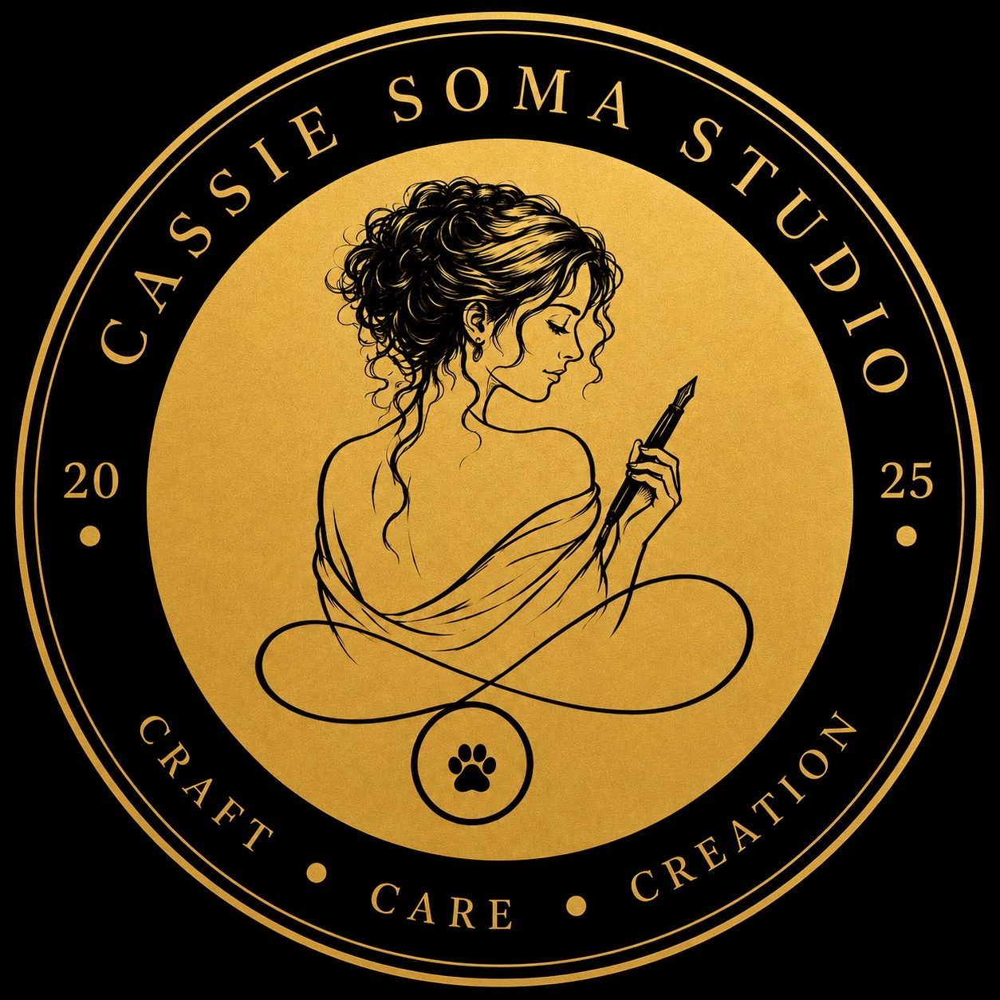

Dust Travels
A reflection on renovation, residue, and the quiet work of cleaning after change. Read on Substack

A developing body of work exploring femininity, embodiment, memory, ritual, and the quiet ways identity settles into form.
This space holds photography and writing together — not as separate disciplines, but as parts of the same unfolding life.
Two collections of words, photographs, and moments from a life being lived on my own terms. Available in paperback on Amazon.
Self-Portraits and Essays on Identity, Embodiment, and Everyday Life
Through personal essays and intimate self-portraits, Cassie Soma explores identity, embodiment, love, survival, and the ordinary rituals that make a life feel like home. There are dogs, unmade beds, coffee, and wine. Humor alongside loneliness, tenderness alongside stubbornness, and a woman learning to be seen while holding onto the right to define herself.
A collection in words and photographs: a whole, complicated life, still becoming.
Includes artistic nude self-portraits. Intended for adult readers.
Buy on AmazonReflections from Cassie Soma’s life as a mobile dog groomer, bringing together the dogs, the people who love them, and the moments that stay with her after the day’s work is done. Funny encounters, difficult days, and small acts of trust reveal the patience, attention, and care at the heart of the craft.
A personal look at the relationships and everyday experiences that shape a working life, one dog at a time.
Buy on AmazonSerialized fiction
A psychological literary story that begins with a visit to a quiet shop. A black dress, an unexpected offer, and the people along Tula Street draw Cassie back.
Begin with Chapter One on SubstackAn ongoing series of alien encounters, field notes, and the increasingly strange business of everyday life.
A reflection on renovation, residue, and the quiet work of cleaning after change. Read on Substack
Memory, lineage, and the machines that carried love across generations. Read on Substack
A small meditation on unwinding, beauty, and the art of closing the day gently. Read on Substack